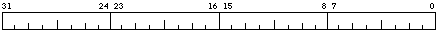

These registers are accessed using the mtpr and mfpr instructions.

The MCSR provides additional information about bus errors and translation buffer errors which caused a machine check fault. As the only cause of a machine check fault on MacVAX is a bus error caused by an access to a non-existent physical memory location only bit 3 of this register will be set. It is cleared when the bus error bit of the MCESR is cleared.
The MCESR logs information about causes of a machine check fault. Currently the only thing that will cause a machine check fault on MacVax is a read or write to a non-existent Physical memory location. This will generate a bus error and set bit 3 of the register. The MCSR register holds further details of the bus error. I believe a real VAX may only generate a bus error on a read and not on a write. Writing a 1 to the Bus Error bit clears it. It will also clear bits 0 to 3 of the MCSR.